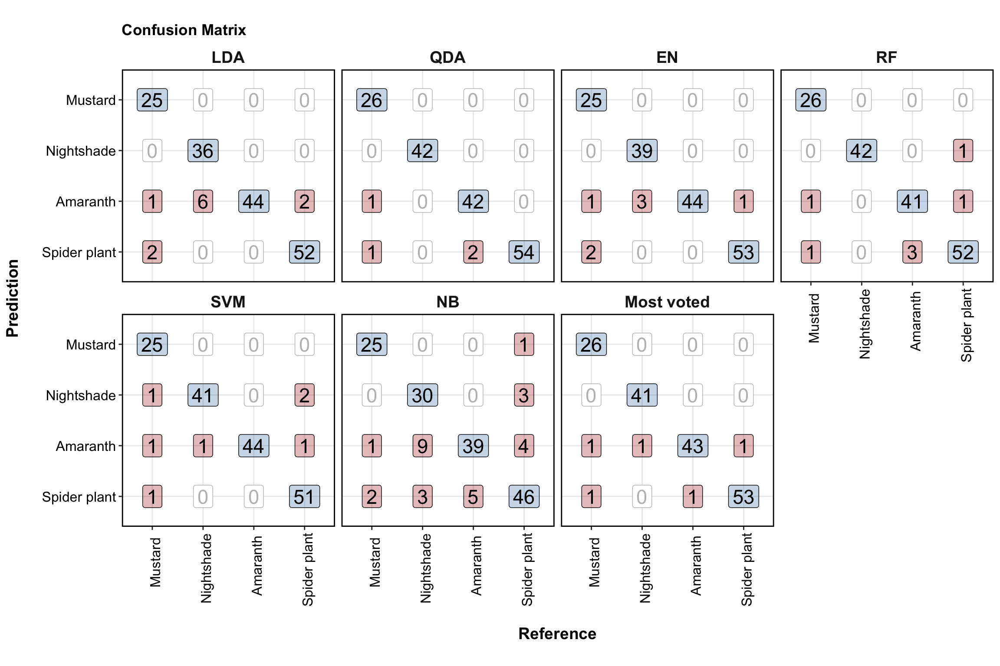
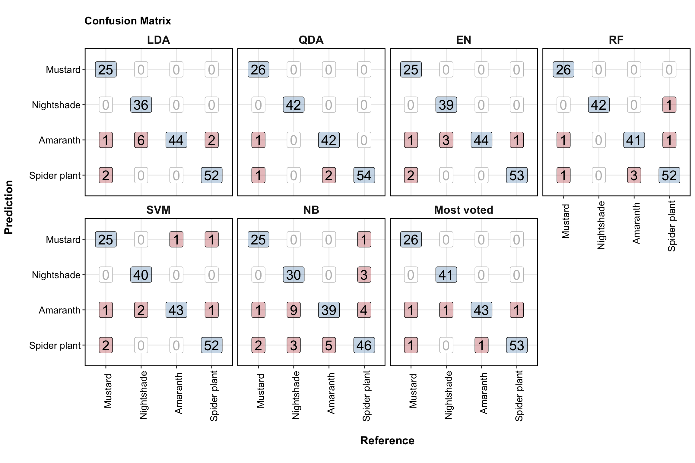
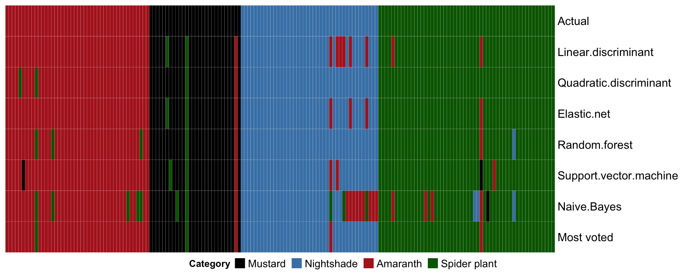

Object naming:
df.XXX: a data.frame or tibble object; e.g., df.all.data
df.modelname…: a data frame or tibble containing tidied results from a model prediction vs actual
mat.XXX: a matrix object; e.g., mat.content
pltXXX: a plot object; e.g., plt.univariate.boxplot.dot
mdl.trained.XXXX: model from training set; e.g., mdl.trained.LDA
mdl.fitted.XXX: object with fitted results output from a trained model; e.g., mdl.fitted.LDA
mdl.XXX: a model object; e.g., mdl.LDA
fitted.XXX: predicted class, e.g. fitted.logistic.elasticNet
cf.XXX: confusion table; e.g., cf.counts.LDA
func.XXX: defined functions; e.g., func.boxplot.Site()
# functional packages
library(readxl)
# Machine learning packages
library(MASS)
library(glmnet)
library(caret)
library(rpart.plot) # for classification tree plot
library(randomForest)
library(e1071)
library(ComplexHeatmap)
# The core package collection
# load last, so as the key functions are not masked by others; but instead masking others if any
library(tidyverse)set.seed(19911110)# Read amino acid content dataset
path = "/Users/Boyuan/Desktop/My publication/7th. HILIC amino acid & PCA/Publish-ready files/AIV free amino acids content.xlsx"
df.content= read_excel(path , sheet = "content in AIV (mg.100g DW-1)")
# select needed columns and tidy up
df.content = df.content %>% select(Name, Category, Site) %>%
mutate(strata.group = paste(Category, Site, sep = "_")) %>%
cbind(df.content %>% select(23:ncol(df.content))) %>%
as_tibble()
# categories
unique.categories = df.content$Category %>% unique()
# category colors
color.category = c("Black", "Steelblue", "Firebrick" , "Darkgreen")
names(color.category) = unique.categories# strata group
unique.categories.site = df.content$strata.group %>% unique()
# Define function doing stratified sampling based on category-site combination
func.stratifiedSampling = function(trainingRatio = 0.7){
index.train = c()
for (a in unique.categories.site){
df.content.i = df.content %>% filter(strata.group == a)
index.train.i = sample(df.content.i$Name, size = (trainingRatio * nrow(df.content.i)) %>% floor())
index.train = c(index.train, index.train.i)
}
df.train = df.content %>% filter(Name %in% index.train)
df.test = df.content %>% filter(! Name %in% index.train)
list.learn = list(df.train, df.test)
return(list.learn)
}
# demo
# df.learn = func.stratifiedSampling(trainingRatio = .5)
# In practice, the trainingRatio is manuall changed by citing arguments from higher level function (see below)
# the split ratio in convenient practice should never be changed in this sampling function# input list: 1st: training set; 2nd, test set; i.e., the output of func.stratifiedSampling
func.normalize.trainTest = function(list) {
mat.train = list[[1]] %>% dplyr::select(-c(Name, Category, Site, strata.group, `Data File`)) %>% as.matrix()
mat.test = list[[2]] %>% dplyr::select(-c(Name, Category, Site, strata.group, `Data File`)) %>% as.matrix()
# mean vector computed from training set (as single column matrix)
meanVector.train = apply(mat.train, 2, mean) %>% as.matrix()
# diagonol matrix, with standard deviation inverse
mat.inverse.sd.diaganol = apply(mat.train, 2, sd) %>% diag() %>% solve()
# Reserve column names
colnames(mat.inverse.sd.diaganol) = colnames(mat.train)
# ones vector, as single column matrix, length = # observation units of TRAINING set
vector.ones.train = rep(1, nrow(mat.train)) %>% as.matrix()
# Compute normalized training dataset
mat.train.scaled = (mat.train - vector.ones.train %*% t(meanVector.train)) %*% mat.inverse.sd.diaganol
# Use built-in scale function to double check computation
# Used for trouble shooting purpose; comment out to keep console cleanness when running code
# mat.train.scaled.test = mat.train %>% scale(center = T, scale = T)
# if ((mat.train.scaled - mat.train.scaled.test ) %>% sum() %>% round(10) == 0){
# cat("Computation is correct!")
# } else{
# cat("Computation may be incorrect. Further examination is required!")
# }
# Normalize test dataset using training-set mean vector and standard deviation diagonal matrix
# ones vector, as single column matrix, length = # observation units of TESTING set
vector.ones.test = rep(1, nrow(mat.test)) %>% as.matrix()
mat.test.scaled = (mat.test - vector.ones.test %*% t(meanVector.train)) %*% mat.inverse.sd.diaganol
# Complete two matrices with category labels, and convert to tibble
df.train.scaled = cbind(data.frame(Category = list[[1]]$Category), mat.train.scaled) %>% as_tibble()
df.test.scaled = cbind(data.frame(Category = list[[2]]$Category), mat.test.scaled) %>% as_tibble()
return(list(df.train.scaled, df.test.scaled))
}
# demo
# func.stratifiedSampling(trainingRatio = .6) %>% func.normalize.trainTest()# Define a third function: chaining the prior two functions together
# 1) stratified sampling into training and test set
# 2) normalize training set, and normalize test set based on training mean vector and standard deviation
func.strata.Norm.trainTest = function(trainingRatio = 0.7, scaleData = T){
if(scaleData == T){
func.stratifiedSampling(trainingRatio = trainingRatio) %>%
func.normalize.trainTest() %>% return()
} else {
func.stratifiedSampling(trainingRatio = trainingRatio) %>% return()
}
}
# demo: 1> func.strata.Norm.trainTest(); # default 0.7 train-test split ratio
# 2> func.strata.Norm.trainTest(trainingRatio = .5) # manually change train-test split ratio# Define two function: tidy up confusion tables (contingency table and stats)
# 1) For contigency table
func.tidy.cf.contigencyTable = function(inputTable, ModelName){
inputTable %>% as.data.frame() %>%
spread(key = Reference, value = Freq) %>%
mutate(Model = ModelName) %>%
return()
}
# demo: cf.counts.LDA %>% func.tidy.cf.contigencyTable()# 2) For stats table based on each category
func.tidy.cf.statsTable = function(inputTable, ModelName){
cbind(Category = rownames(inputTable), inputTable %>% as_tibble()) %>%
mutate(Category = str_remove(Category, pattern = "Class: ")) %>%
mutate(Model = ModelName) %>%
return()
}# 3) For overal stats table
func.tidy.cf.statsOveral = function(vector, modelName){
d = data.frame(Accuracy = vector[1], AccuracyLower = vector[3],
AccuracyUpper = vector[4], Model = modelName) %>% as_tibble()
return(d)
}func.mostVotes = function(vector){
x = vector %>% table() %>% sort() %>% rev()
names(x)[1] %>% return()
}# Now, let's set up the training and testing set.
# When needed for certain algorithm, when hyper-parameters are tuned, the training set is further split into validations sets using cross-validation method.
df.learn = func.strata.Norm.trainTest(trainingRatio = .7, scaleData = T)
df.train = df.learn[[1]]
df.test = df.learn[[2]]Note here that the training set is scaled, and the testing set is also scaled using the mean and covariance matrix of the testing set!
Despite Differences in algorithms per se, the workflow is roughly the same: train the model, test performance on the teset set, and tidy up the confusion matrix. Regardless such similarityit and the possibility of wrapping different algorithms into one overal function, in this work each algorithm is written in a rather independant manner. Redundant as this truely is, this practice is rewarded by easy understanding of each algorithm section, which could be read as a more or less standalone method; meanwhile, this practice provides rapid access for trouble shooting.
# model train
mdl.trained.LDA = lda(Category ~., data = df.train)
# predict on test set, with equal prior probability
mdl.fitted.LDA = predict(mdl.trained.LDA, newdata = df.test, prior = rep(1/4, 4))
fitted.LDA = mdl.fitted.LDA$class # here we overwrite the prior fitted.LDA object
cf.LDA = confusionMatrix(data = fitted.LDA, reference = df.test$Category, mode = "everything")
# confusion table
cf.counts.LDA = cf.LDA$table %>% func.tidy.cf.contigencyTable(ModelName = "LDA")
# Summary stats table
cf.stats.LDA = cf.LDA$byClass %>% func.tidy.cf.statsTable(ModelName = "LDA") # model train
mdl.QDA = qda(Category ~., data = df.train)
# predict on test set, with equal prior probability
mdl.fitted.QDA = predict(mdl.QDA, newdata = df.test, prior = rep(1/4, 4))
fitted.QDA = mdl.fitted.QDA$class
cf.QDA = confusionMatrix(data = fitted.QDA, reference = df.test$Category, mode = "everything")
# confusion matrix
cf.counts.QDA = cf.QDA$table %>% func.tidy.cf.contigencyTable(ModelName = "QDA")
# summary results
cf.stats.QDA = cf.QDA$byClass %>% func.tidy.cf.statsTable(ModelName = "QDA")With 0.5 split ratio, console would pop up error “rank deficiency in group Mustard”. QDA estimates the covariance matrix for each population, and requries more data input. Mustard is the category with the smallest size of observation units. While LDA assumes equal covariance matrix for all populations, and takes a pooled covaraince matrix, and thus requires much less data input for parameter estimation. In fact, LDA does a fairly nice job when trained with only 10% of data.
# cross validation
cv.mdl.logistic.ridge = cv.glmnet(x = df.train[, -1] %>% as.matrix(), y = df.train$Category,
family = "multinomial", alpha = 0)
cv.mdl.logistic.elasticNet = cv.glmnet(x = df.train[, -1] %>% as.matrix(), y = df.train$Category,
family = "multinomial", alpha = 0.5)
cv.mdl.logistic.lasso = cv.glmnet(x = df.train[, -1] %>% as.matrix(), y = df.train$Category,
family = "multinomial", alpha = 1)
par(mfrow = c(1, 3))
plot(cv.mdl.logistic.ridge, main = "Ridge", line = 2)
plot(cv.mdl.logistic.elasticNet, main = "Elastic Net (alpha = 0.5)", line = 2)
plot(cv.mdl.logistic.lasso, main = "Lasso", line = 2)par(mfrow = c(1, 1))# check model coefficients
x = coef(cv.mdl.logistic.elasticNet, s = "lambda.min")
df.logisticNets.coefficients =
data.frame(x[[1]] %>% as.matrix(), x[[2]] %>% as.matrix(),
x[[3]] %>% as.matrix(), x[[4]] %>% as.matrix())
colnames(df.logisticNets.coefficients) = names(x)
# df.logisticNets.coefficients# Prediction with train-test split, a formal test of model efficiency
# Define function for performing regularized logistic with different alpha values
func.regularizedLogistic = function(
input.alpha, # control ridge, lasso, or between
ModelName # model type as extra column note in the confusion table output
){
# train with 10-fold cross validation
cv.mdl.logistic = cv.glmnet(x = df.train[, -1] %>% as.matrix(), y = df.train$Category,
family = "multinomial", alpha = input.alpha, nfolds = 10)
# predict with test set
fitted.logistic =
predict(cv.mdl.logistic, newx = df.test[, -1] %>% as.matrix(),
s = cv.mdl.logistic$lambda.1se, type = "class") %>% c() %>%
factor(levels = sort(unique.categories), ordered = T) # Note: important to sort unique.categories!
# wrap up prediction results
cf.logistic = confusionMatrix(data = fitted.logistic, reference = df.test$Category)
cf.counts.logistic = cf.logistic$table %>% func.tidy.cf.contigencyTable(ModelName = ModelName)
cf.stats.logistic = cf.logistic$byClass %>% func.tidy.cf.statsTable(ModelName = ModelName)
return(list(cf.counts.logistic, cf.stats.logistic, fitted.logistic, cf.logistic))
}
# Test upon different alpha values (important to note that alpha is not a hyper-parameter to optimize!)
# func.regularizedLogistic(input.alpha = 0, ModelName = "Ridge")
# func.regularizedLogistic(input.alpha = 1, ModelName = "Lasso")
# func.regularizedLogistic(input.alpha = 0.5, ModelName = paste("ElasticNet, α = 0.5") )
# We'remore interested in the elastic net results
list.logistic = func.regularizedLogistic(input.alpha = 0.5, ModelName = paste("EN") )
cf.counts.ElasticNet =list.logistic[[1]]
cf.stats.ElasticNet = list.logistic[[2]]
fitted.ElasticNet = list.logistic[[3]]
cf.EN = list.logistic[[4]]# Predict with train-test split
colnames(df.train) = make.names(colnames(df.train))
colnames(df.test) = make.names(colnames(df.test))
# set up training model and test accuracy
mdl.randomForest = randomForest(Category ~., data = df.train, ntree = 500, mtry = 5)
fitted.randomForest = predict(mdl.randomForest, newdata = df.test)
# set up confusion table
cf.randomForest = confusionMatrix(data = fitted.randomForest,
reference = df.test$Category,
mode = "everything")
# confusion matrix
cf.counts.randomForest = cf.randomForest$table %>%
func.tidy.cf.contigencyTable(ModelName = "RF")
# Summary stats
cf.stats.randomForest = cf.randomForest$byClass %>%
func.tidy.cf.statsTable(ModelName = "RF")
# cf.counts.randomForest
# cf.stats.randomForestmdl.svm = svm(x = df.train[, -1], y = df.train$Category)
# predict
fitted.svm = predict(mdl.svm, newdata = df.test[, -1])
# confusion matrix
cf.svm = confusionMatrix(
data = fitted.svm, reference = df.test$Category, mode = "everything")
# confusion matrix
cf.counts.svm = cf.svm$table %>%
func.tidy.cf.contigencyTable(ModelName = "SVM")
# summary stats
cf.stats.svm = cf.svm$byClass %>%
func.tidy.cf.statsTable(ModelName = "SVM")# train
mdl.Bayes = naiveBayes(x = df.train[, -1], y = df.train$Category)
# predict
fitted.Bayes = predict(mdl.Bayes, newdata = df.test, type = "class")
# confusion matrix
cf.Bayes = confusionMatrix(
data = fitted.Bayes, reference = df.test$Category, mode = "everything")
# confusion matrix
cf.counts.Bayes = cf.Bayes$table %>%
func.tidy.cf.contigencyTable(ModelName = "NB")
# summary stats
cf.stats.Bayes = cf.Bayes$byClass %>%
func.tidy.cf.statsTable(ModelName = "NB")unique.models = factor(
c("LDA", "QDA", "EN", "RF", "SVM", "NB", "Most voted"), ordered = T)# Summary of all machine learning techniques ----
# Sample wise prediction of all models and most voted
df.actual.vs.fit = data.frame(
"Actual" = df.test$Category,
"LDA" = fitted.LDA,
"QDA" = fitted.QDA,
"EN" = fitted.ElasticNet,
"RF" = fitted.randomForest,
"SVM" = fitted.svm,
"NB" = fitted.Bayes)
df.actual.vs.fit = df.actual.vs.fit %>% as_tibble() %>%
mutate(Actual = factor(Actual, ordered = F))
df.actual.vs.fit = df.actual.vs.fit %>%
mutate(most.voted = apply(df.actual.vs.fit %>% select(-Actual),
MARGIN = 1, func.mostVotes))
# Most voted confusion matrix
cf.mostVoted = confusionMatrix(data = df.actual.vs.fit$most.voted %>% factor(),
reference = df.actual.vs.fit$Actual %>% factor(), mode = "everything")
cf.counts.MostVoted = cf.mostVoted$table %>%
func.tidy.cf.contigencyTable(ModelName = "Most voted")
cf.stats.MostVoted = cf.mostVoted$byClass %>%
func.tidy.cf.statsTable(ModelName = "Most voted")# Summary of all machine learning techniques
df.confusionMatrix.all = cf.counts.LDA %>% rbind(cf.counts.QDA) %>%
rbind(cf.counts.ElasticNet) %>% # rbind(cf.counts.CART) %>%
rbind(cf.counts.randomForest) %>% rbind(cf.counts.svm) %>%
rbind(cf.counts.Bayes) %>% rbind(cf.counts.MostVoted) %>% as_tibble()
# tidy up the confusion matrix combined
df.confusionMatrix.all.tidy = df.confusionMatrix.all %>%
# tidy up
gather(-c(Prediction, Model), key = reference, value = counts) %>%
# convert AIVs category into ordered factor
mutate(reference = factor(reference, levels = unique.categories, ordered = T),
Prediction = factor(Prediction, levels = unique.categories %>% rev(), ordered = T)) %>%
# change model order in the dataset
mutate(Model = factor(Model, levels = unique.models, ordered = T)) %>%
arrange(Model, reference, Prediction) %>%
mutate(Diaganol = Prediction == reference)# assign color to correct / incorrect prediction
diag = df.confusionMatrix.all.tidy %>%
filter(Diaganol == F)
df.confusionMatrix.all.tidy = diag %>%
mutate(color = ifelse(counts == 0, "Grey", "Firebrick")) %>%
rbind(df.confusionMatrix.all.tidy %>% filter(Diaganol == T) %>%
mutate(color = "steelblue"))# Visualize confusion matrix
df.confusionMatrix.all.tidy %>%
ggplot(aes(x = reference, y = Prediction)) +
facet_wrap(~Model, nrow = 2) +
# off diaganol incorrect prediction
geom_label(data = df.confusionMatrix.all.tidy %>% filter(color == "Firebrick"),
aes(label = counts),
fill = "firebrick", alpha = .3, size = 6) +
# diaganol correct prediction
geom_label(data = df.confusionMatrix.all.tidy %>% filter(color == "steelblue"),
aes(label = counts),
fill = "Steelblue", alpha = .3, size = 6) +
# zero counts
geom_label(data = df.confusionMatrix.all.tidy %>% filter(color == "Grey"),
aes(label = counts),
size = 6, color = "grey") +
theme_bw() +
theme(axis.text.x = element_text(angle = 40, vjust = .8, hjust = .8, color = "black", size = 12),
axis.text.y = element_text(color = "black", size = 12),
axis.title = element_text(size = 14, colour = "black"),
strip.background = element_blank(),
strip.text = element_text(face = "bold", size = 14),
panel.border = element_rect(color = "black", size = 1),
title = element_text(face = "bold")) +
labs(x = "\nReference", y = "Prediction\n") 
ggtitle("Confusion Matrix") +
coord_fixed(ratio = 1)## NULL# Sample-wise comparison between models
fitted.ElasticNet = func.regularizedLogistic(input.alpha = 0.5, ModelName = "Elastic Net")[[3]]
df.actual.vs.fit = data.frame(
"Actual" = df.test$Category,
"Linear discriminant" = fitted.LDA,
"Quadratic discriminant" = fitted.QDA,
"Elastic net" = fitted.ElasticNet,
# "CART" = fitted.CART,
"Random forest" = fitted.randomForest,
"Support vector machine" = fitted.svm,
"Naive Bayes" = fitted.Bayes)
df.actual.vs.fit = df.actual.vs.fit %>% as_tibble() %>%
mutate(Actual = factor(Actual, ordered = F))
# df.actual.vs.fit
# most votes
func.mostVotes = function(vector){
x = vector %>% table() %>% sort() %>% rev()
names(x)[1] %>% return()
}
df.actual.vs.fit = df.actual.vs.fit %>%
mutate('Most voted' = apply(df.actual.vs.fit %>% select(-Actual),
MARGIN = 1, func.mostVotes))# Heatmap of sample-wise predicted result
plt.heatmap.machineLearning =
df.actual.vs.fit %>% arrange(`Most voted`) %>%
as.matrix() %>%
Heatmap(col = color.category,
heatmap_legend_param = list(
title = "Category", title_position = "leftcenter",
nrow = 1,
labels_gp = gpar(fontsize = 11)),
rect_gp = gpar(col = "white", lwd = 0.1))
draw(plt.heatmap.machineLearning,
heatmap_legend_side = "bottom")
# Set up summary statistics
df.stats = cf.stats.LDA %>% rbind(cf.stats.QDA) %>%
rbind(cf.stats.ElasticNet) %>% rbind(cf.stats.randomForest) %>%
rbind(cf.stats.svm) %>% rbind(cf.stats.Bayes) %>% rbind(cf.stats.MostVoted) %>%
select(Category, Model, Precision, Recall, F1) %>%
gather(-c(1:2), key = metrics, value = values) %>%
mutate(Model = factor(Model, levels = unique.models, ordered = T))
df.stats.overal = func.tidy.cf.statsOveral(cf.LDA$overall, modelName = "LDA") %>%
rbind(func.tidy.cf.statsOveral(cf.QDA$overall, modelName = "QDA")) %>%
rbind(func.tidy.cf.statsOveral(cf.EN$overall, modelName = "EN")) %>%
rbind(func.tidy.cf.statsOveral(cf.randomForest$overall, modelName = "RF")) %>%
rbind(func.tidy.cf.statsOveral(cf.svm$overall, modelName = "SVM")) %>%
rbind(func.tidy.cf.statsOveral(cf.Bayes$overall, modelName = "NB")) %>%
rbind(func.tidy.cf.statsOveral(cf.mostVoted$overall, modelName = "Most voted")) %>%
mutate(Model = factor(Model, levels = unique.models, ordered = T))The overal accuracy of the model is in bold, with corresponding 95% confidence interval shown in following line.
plt.summaryStats =
df.stats %>% ggplot(aes(x = Category, y = values, color = metrics)) +
geom_segment(aes( xend = Category, y = 0.5, yend = values),
position = position_dodge(0.5)) +
geom_point(size = 4, position = position_dodge(.3), alpha = .9) +
facet_wrap(~Model, nrow = 1) +
theme_bw() +
theme(legend.position = "bottom",
legend.title = element_text(size = 11),
legend.text = element_text(size = 11),
strip.text = element_text(face = "bold", size = 12),
strip.background = element_blank(),
axis.text.x = element_text(angle = 90, hjust = 1, colour = "black", size = 11),
axis.text.y = element_text(colour = "black", size = 11),
axis.title = element_text(size = 11)) +
coord_cartesian(ylim = c(0.65, 1)) +
scale_color_brewer(palette = "Accent") +
# overal stats
geom_text(data = df.stats.overal,
aes(x = 2.5, y = 0.7, label = round(Accuracy, 3) * 100),
color = "black", fontface = "bold", size = 5) +
geom_text(data = df.stats.overal,
aes(x = 2.5, y = 0.66,
label = paste(round(AccuracyLower, 3) * 100, " ~ ",
round(AccuracyUpper, 3) * 100)),
color = "black", size = 5)
plt.summaryStats 